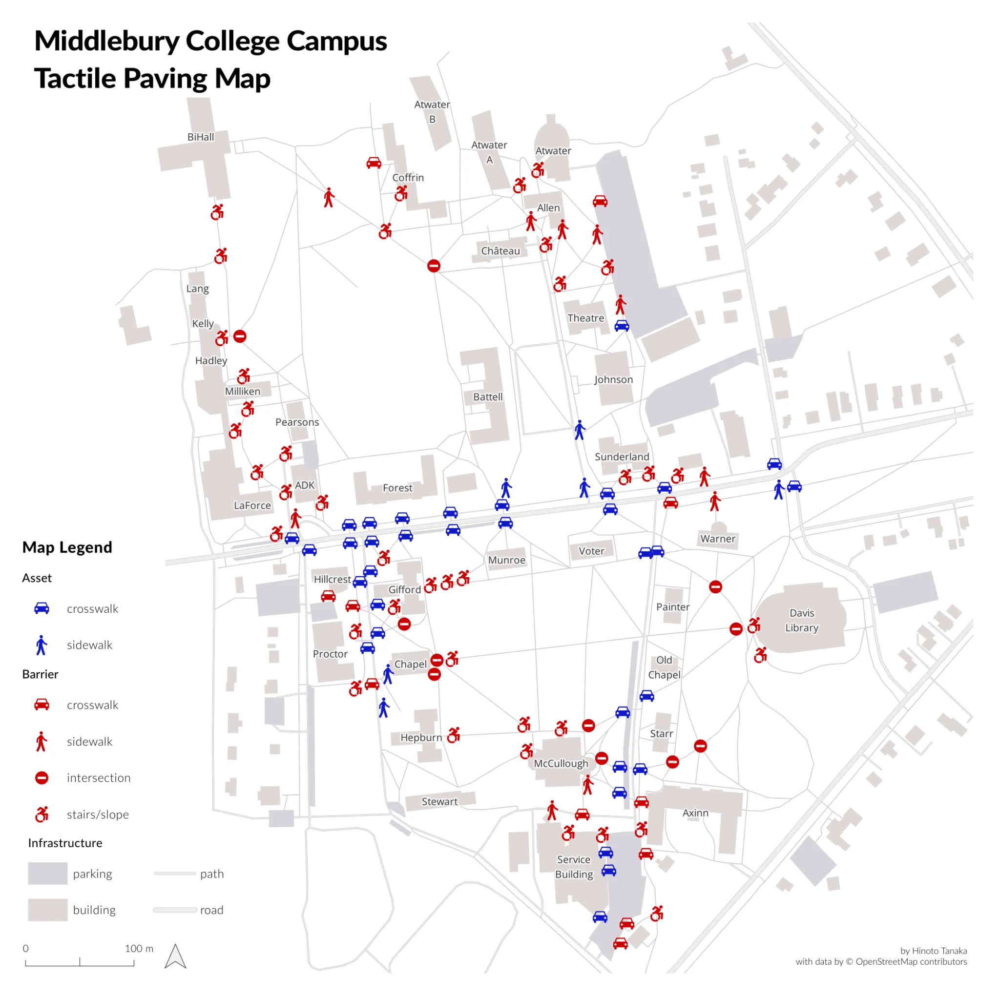

Mapping the Gaps
Middlebury is easy to walk around in many places. But how accessible is it for someone who relies on tactile paving?

In September 2025, I walked around campus with Mimi and Arlo to record tactile paving at crosswalks, sidewalks, intersections, stairs, and slopes. I mapped what we found in QGIS.
Blue marks places with tactile paving; red marks places without it. Several crosswalks are missing tactile warnings, and none of the stairs or slopes we surveyed had them.